Увлекательные истории об аномальных объектах!

Увлекательные истории об аномальных объектах!
Добро пожаловать в захватывающий мир SIT (Search and Isolation of Threats) - вымышленной организации, которая защищает наше общество от аномальных существ и явлений! Воображение открывает перед нами двери в фантастическую реальность, где SIT стала искрометным сочетанием научных гений и бесстрашных искателей приключений.
SIT - это секретная, мировая инициатива, объединяющая лучших умов исследователей, технологов и охотников во имя общего блага. Наша миссия - обнаруживать и обезвреживать аномалии, которые угрожают безопасности нашего мира. Мы патрулируем мрачные уголки глобальной карты, следуя за загадочными следами и легендами о необъяснимых явлениях.
Оборудованные последними научными разработками и передовыми технологиями, наши команды проводят невероятные расследования, чтобы проникнуть в тайные миры таинственных существ. Затем мы используем наши уникальные анклавы для их изоляции и исследования, гарантируя, что ни одна угроза не проникнет в нашу реальность.
Но SIT - это не только мощь и наука, это истории о стойкости и доблести наших сотрудников, они ставят свою жизнь на кон, чтобы защитить мир от неведомых угроз. Этот ресурс - список документов SIT, которые откроют вам дверь в захватывающий мир фантастического приключения и необычайных открытий.
Приготовьтесь к захватывающему путешествию вместе с SIT, где границы между мифом и реальностью стираются, а опасности подстерегают на каждом шагу. Откройте ваше воображение и окунитесь в мир сказочных существ и эпических приключений с SIT - компанией, которая сражается за безопасность и сохранение гармонии в нашем удивительном мире!
В данном разделе Вы научитесь правильно изучать документы SIT, читать кодовые имена и различать камеры. Это поможет получить больше удовольствия от прочтения, а также, возможно, поможет Вам когда-нибудь создать свой первый документ.
Любой документ начинается с кодового имени. К примеру, SIT: M-001-BF. Начнем по порядку. Аббревиатура SIT означает, что объект был пойман нашей организацией. Следующая буква в коде означает уровень опасности аномалии. Всего их различают пять:
| Код | Описание |
|---|---|
| S | Safe. Объект, не причиняющий ни физического, ни психологического вреда. |
| M | Mental Damage. Объект, причиняющий только психологический вред. |
| P | Physical Damage. Объект, причиняющий только физический вред. |
| H | Hard Damage. Объект, причиняющий как физический, так и психологический вред. Способен на одиночные убийства. |
| E | Extreme Danger. Объект, который может стать катастрофой глобального масштаба. Способен на массовые убийства. |